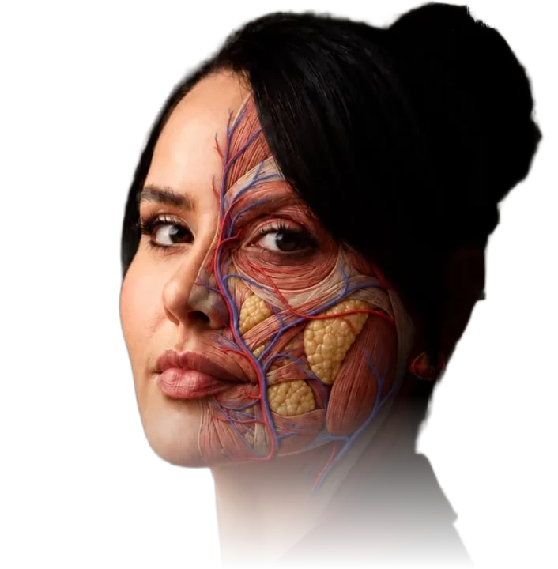

Filgueiras Academy
Anatomia
Fresh Frozen
Online · direto dos EUA
Novo na plataforma
Dra. Aline Filgueiras
1.000+ alunas formadas
Fresh frozen · EUA
A face
por dentro
Dissecção e aplicação, online
Filgueiras Academy
Dra. Aline Filgueiras
1.000+ alunas formadas
Curso online
Fresh frozen
dos EUA
Sem visto e sem passagem
Filgueiras Academy
Dra. Aline Filgueiras
garantia de 7 dias
Filgueiras Academy
70+ aulas
+ fresh frozen
Toxina · preenchimento · bioestimuladores
6 encontros ao vivo
Dra. Aline Filgueiras
12 meses de acesso
Anatomia em fresh frozen
Mão firme
perto do risco
O que passa a milímetros da agulha
Filgueiras Academy
Dra. Aline Filgueiras
1.000+ alunas formadas

Filgueiras Academy
Fresh
Frozen
Anatomia sem formol · direto dos EUA
Vasos
o que passa perto da agulha
Gordura
os compartimentos da face
Músculo
os planos de cada camada
Curso online
Dra. Aline Filgueiras
1.000+ alunas formadas